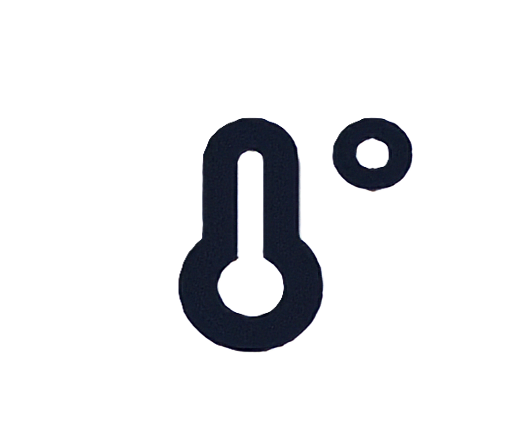
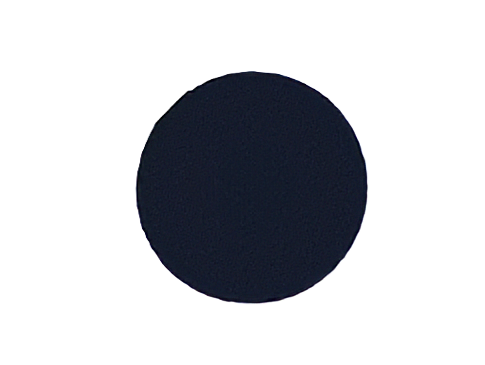

Earth
Terrestrial
The only known planet to support life, with liquid water on its surface.
Gravity
9.8
Mass
0.00315
Period
365


Planetary Facts at a Glance
Below is a comparative table of major planets in our solar system. The data highlights key physical properties used by astronomers and researchers worldwide.
Data about the planets of our solar system (planetary facts based on NASA data)
| Name | Mass (10²⁴ kg) | Diameter (km) | ||
|---|---|---|---|---|
|
Terrestrial Planets |
Mercury | 0.330 | 4,879 | |
| Venus | 4.87 | 12,104 | ||
| Earth | 5.97 | 12,756 | ||
| Mars | 0.642 | 6,792 | ||
|
Jovian Planets |
Gas Giants | Jupiter | 1,898 | 142,984 |
| Saturn | 568 | 120,536 | ||
| Ice Giants | Uranus | 86.8 | 51,118 | |
| Neptune | 102 | 49,528 | ||
| Dwarf Planets | Pluto | 0.0130 | 2,377 | |